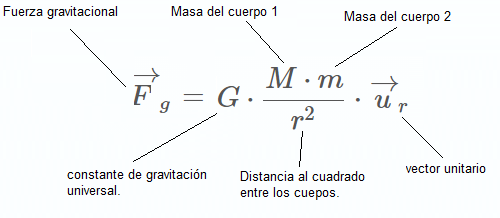

Ley de Gravitación Universal de Newton.
Definición.

Imagen tomada de: https://sites.google.com/site/elmundodelacosmologia/_/rsrc/1370281056834/ley-de-la-gravitacion-universal/20070924klpcnafyq_158.Ges.SCO.png
Dos cuerpos se atraen con una fuerza directamente proporcional al producto de sus masas e inversamente proporcional al cuadrado de la distancia que las separa, y está dirigida según la recta que une los cuerpos.
Dicha fuerza se conoce como fuerza de la gravedad o fuerza gravitacional y se expresa de la forma:

Imagen tomada de: https://www.fisicalab.com/apartado/ley-gravitacion-universal
Donde:
- $Fg$: Es el vector de la fuerza gravitacional. Su unidad de medida en el SI es el Newton (N).
- $G$: Es la constante de gravitacion universal, cuyo valor es de $G = 6,67x10^-11 Nm^2/kg^2$.
- $M$ y $m$: son las masas de los cuerpos que estan en inteacción, Su unidad de medida en el SI es el kilogramo (kg).
- $r$: Es la distancia que separa a las masas en cuestión.
- $u_r$: Es un vector unitario que posee la misma dirección de la fuerza.
NOTA:
No confunda $g$ con $G$. Aclaremos que $g$ minúscula es la aceleración debida a la gravedad, que relaciona el peso $w$ de un cuerpo con su masa $m: w = mg$. El valor de $g$ varía en diferentes puntos de la superficie terrestre y en la superficie de otros planetas. En cambio, $G$ mayúscula relaciona la fuerza gravitacional entre dos cuerpos con sus masas y la distancia entre ellos. Decimos que $G$ es una constante universal porque tiene el mismo valor para cualesquiera dos cuerpos, sin importar dónde estén.
Luisa Ortiz - Educación en Tecnología.
Universidad Distrital Francisco José de Caldas.